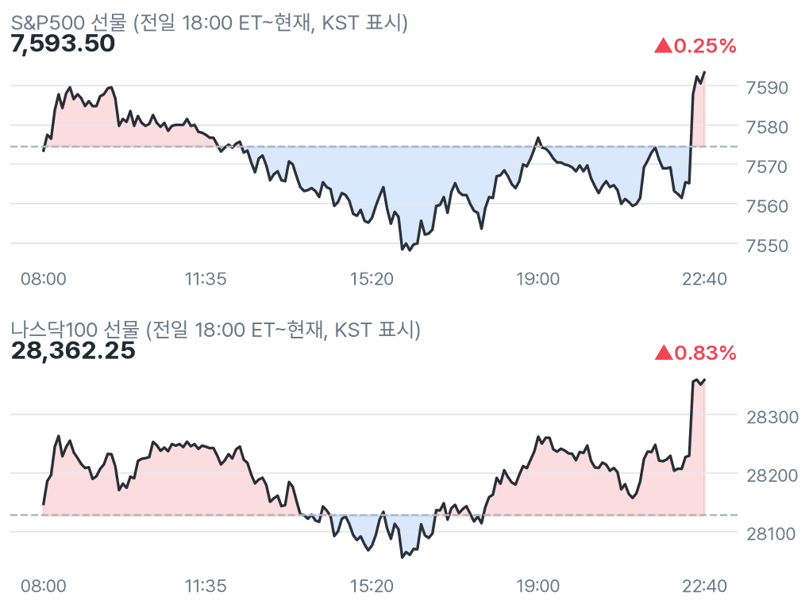
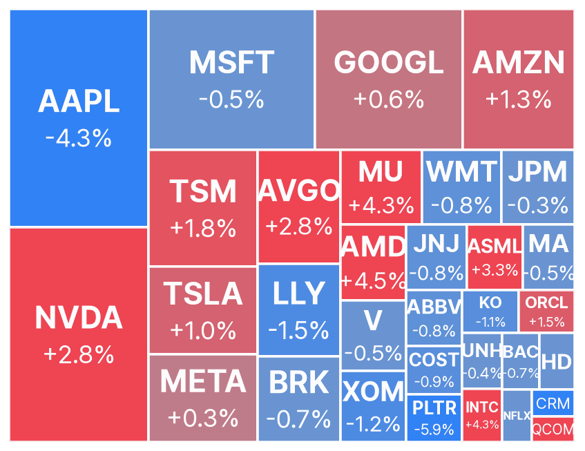
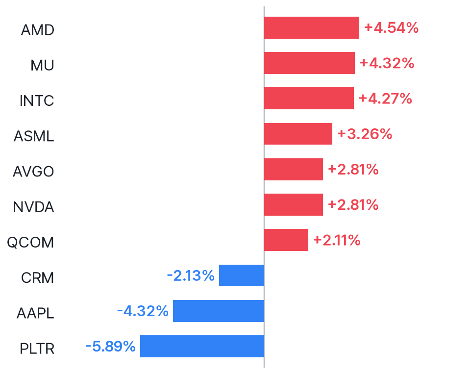
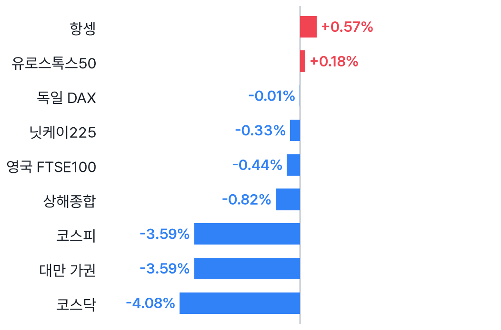
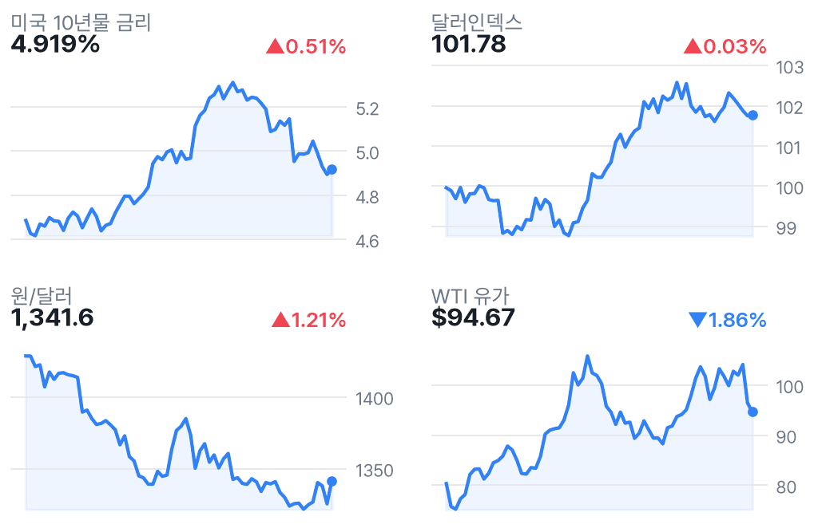

나스닥 선물 0.83%↑, 반도체 반등·애플은 급락
✅ 핵심 요약
- 나스닥 선물 +0.83%·S&P500 +0.25%, 반도체 반등에도 다우 -0.23%
- 애플 -4.32%, 메모리 비용의 수익성 압박 우려…팔란티어도 실적 후 -5.89%
- 팔란티어 목표가 MS $205→$233·파이퍼 $231→$235, 투자의견은 유지
- WTI $94.67·-1.86%, 이란 외교 기대…중간선거·AMD 장후 실적 주목
📊 주요 지표
S&P500 선물
7,593.50
▲0.25%
나스닥100 선물
28,362.25
▲0.83%
다우 선물
52,015
▼0.23%
러셀 선물
2,834.10
▲0.58%
VIX
20.82
▼1.56%
미국 10년물
4.919%
▲0.51%
달러인덱스
101.78
▲0.03%
원/달러
1,341.6
▲1.21%
WTI
$94.67
▼1.86%
금
$3,973
▲0.08%
비트코인
$77,411
▲0.96%
유로스톡스50
6,187.35
▲0.18%
🧭 시장 해석
반도체 반등으로 나스닥100 선물은 0.83% 올랐지만 다우는 0.23% 하락했다. CNBC는 중간선거 경계와 애플의 메모리 비용 압박을 짚었다. 팔란티어도 실적 후 하락해, 해석상 기술주 전반의 위험선호 회복보다는 종목별 차별화에 가깝다.
국내 반도체에는 미국 칩주 반등의 지속성이 중요하다. 원/달러 1,341.6원과 미국 10년물 4.919%는 부담 요인이다. 개장 후 상승 확산 여부와 JOLTS, 장후 AMD의 전망을 함께 확인할 시점이다.
반도체 반등과 AI 수익성 우려는 공존
AMD +4.54%, 마이크론 +4.32%, 인텔 +4.27%, 엔비디아 +2.81%로 칩주가 반등했다. 반면 애플 -4.32%, 팔란티어 -5.89%다. 해석상 지수 반등만으로 AI 투자 우려 해소를 단정하기 어렵다. AMD 장후 실적의 EPS 예상은 $1.68이며, 실제치는 아직 없다.
지표 실제치 미확인·선거 시각 해석 주의
수집 일정에는 오늘 08:30 ET 고영향 미국 지표가 없으며, 외부 검색에서도 해당일 실제치를 추가 검증하지 못했다. 지표 발표가 없었다고 단정하거나 서프라이즈를 제시하지 않는다. JOLTS는 내일 00:00, 예상 715만·이전 708만 건이다. 중간선거 00:16 표기는 결과 확정 시각으로 해석하지 않는다.
📈 차트
미국 지수 선물 야간 흐름

점선 = 전일 정산가
빅테크·대형주 프리마켓 히트맵

전일 종가 대비 프리마켓 현재가 · 타일 크기 = 시가총액
프리마켓 변동 상위 10 (대형주)

변동폭 절대값 기준
유럽(장중) · 아시아(마감) 증시

현지 기준 전일 대비
금리·달러·원화·유가 (3개월)

우측 상단 = 전일 대비
🏦 애널리스트 · 리서치
-
Outperform 유지라는 의견. 모건스탠리는 Overweight를 유지하면서 $355→$350으로 내려 평가가 엇갈린다.
-
Equal-Weight 유지라는 의견. 목표가 상향은 투자의견 상향과 다르며, 주가 반응은 하락이다.
-
Overweight 재확인이라는 의견. 목표가 상향에도 프리마켓 주가는 하락해 애널리스트 평가와 시장 반응이 엇갈린다.
- BAC — UBS 목표가 $67→$62 하향Buy 유지라는 의견으로, 투자의견 강등이 아니라 목표가 조정이다. 프리마켓은 -0.74%.
- JPM — UBS 목표가 $395→$400 상향Buy 유지라는 의견. BAC와 목표가 방향이 달라 금융주도 종목별 구분이 필요하다.
미국 대형주 의견·목표가 변경 9건 (Yahoo)
- 목표가 상향AAPL · BairdOutperform · 목표가 $330 → $340 · 11/03 20:57 KST
- 목표가 하향AAPL · Morgan StanleyOverweight · 목표가 $355 → $350 · 11/03 19:37 KST
- 목표가 상향ABBV · UBSNeutral · 목표가 $275 → $295 · 11/03 06:20 KST
- 목표가 상향ABBV · Leerink PartnersOutperform · 목표가 $309 → $342 · 11/03 05:02 KST
- 목표가 하향BAC · UBSBuy · 목표가 $67 → $62 · 11/03 07:07 KST
- 목표가 상향JPM · UBSBuy · 목표가 $395 → $400 · 11/03 06:58 KST
- 목표가 상향PLTR · Morgan StanleyEqual-Weight · 목표가 $205 → $233 · 11/03 20:22 KST
- 목표가 상향PLTR · Piper SandlerOverweight · 목표가 $231 → $235 · 11/03 18:05 KST
- 목표가 상향XOM · UBSBuy · 목표가 $199 → $213 · 11/03 06:53 KST
📰 주요 뉴스
-
기술주 반등이 시장 전반으로 확산되는지가 관건CNBC
-
메모리 강세가 완제품 업체에는 원가 부담으로 작용CNBC
-
해석상 목표가 상향과 주가 하락의 괴리는 AI 기대치 점검 신호CNBC Markets
-
공급 차질 위험 프리미엄과 물가 기대의 변화에 중요CNBC
-
프리마켓 -15.43%; 구체적 하락 원인은 추가 확인 필요MarketWatch
미국·글로벌 헤드라인 18건
-
CNBC · 11/03 22:48
-
CNBC · 11/03 22:48
-
CNBC · 11/03 22:45
-
CNBC · 11/03 22:44
-
CNBC · 11/03 22:40
-
MarketWatch · 11/03 22:31
-
CNBC · 11/03 22:28
-
MarketWatch · 11/03 22:26
-
MarketWatch · 11/03 22:26
-
CNBC · 11/03 22:25
-
CNBC · 11/03 22:24
-
CNBC · 11/03 22:22
-
CNBC Markets · 11/03 22:21
-
Yahoo Finance · 11/03 22:13
-
Yahoo Finance · 11/03 22:10
-
WSJ Markets · 11/03 22:02
-
CNBC · 11/03 22:01
-
CNBC Markets · 11/03 22:01
애널리스트 관련 헤드라인 12건
-
Benzinga · 11/03 22:43
-
Benzinga · 11/03 22:39
-
Benzinga · 11/03 22:19
-
Investing.com · 11/03 22:12
-
Benzinga · 11/03 20:48
-
TradingView · 11/03 19:20
-
TradingView · 11/03 19:20
-
TradingView · 11/03 19:20
-
TradingView · 11/03 19:20
-
TradingView · 11/03 19:20
-
TradingView · 11/03 16:20
-
TradingView · 11/03 16:20
국내 헤드라인 7건
-
뉴스핌 · 11/03 22:30
-
세계일보 · 11/03 21:37
-
한국신용신문 · 11/03 20:58
-
매일경제 · 11/03 17:26
-
IDNFinancials · 11/03 16:40
-
파이낸셜뉴스 · 11/03 15:57
-
深潮TechFlow · 11/03 15:22
🗓️ 일정
경제지표·이벤트 (KST)
- 00:00🇺🇸 미국 JOLTS Job Openings11/04 · 중요도 중간 · 예상 7.15M · 이전 7.08M
- 00:16🇺🇸 미국 Congressional Elections11/04 · 중요도 높음
오늘 미국 실적 발표 (장전=발표 완료 · 장후=새벽)
- AMD Advanced Micro Devices, Inc.장후시총 $824.1B · EPS 예상 $1.68
- AMGN Amgen Inc.장후시총 $251.9B · EPS 예상 $5.74
- ANET Arista Networks, Inc.장후시총 $213.0B · EPS 예상 $0.99
- SHOP Shopify Inc.장전시총 $204.3B · EPS 예상 $0.33 · 시간외 ▼15.43%
- PFE Pfizer, Inc.장전시총 $174.0B · EPS 예상 $0.72 · 시간외 ▼0.42%
- ETN Eaton Corporation, PLC장전시총 $143.7B · EPS 예상 $3.54 · 시간외 ▲2.66%
- MPC Marathon Petroleum Corporation장전시총 $124.9B · EPS 예상 $25.74 · 시간외 ▼2.41%
- BKNG Booking Holdings Inc.장후시총 $111.3B · EPS 예상 $4.48
- SU Suncor Energy Inc.장후시총 $93.0B · EPS 예상 $2.35
- RACE Ferrari N.V.장전시총 $92.6B · EPS 예상 $2.66 · 시간외 ▲4.22%
- ITUB Itau Unibanco Banco Holding SA장후시총 $78.6B · EPS 예상 $0.22
- APO Apollo Global Management, Inc.장전시총 $68.4B · EPS 예상 $2.04 · 시간외 ▼2.06%
- MPLX MPLX LP장전시총 $61.0B · EPS 예상 $1.11 · 시간외 ▲0.10%
- AME AMTEK, Inc.장전시총 $55.3B · EPS 예상 $2.12 · 시간외 ▲0.86%
👀 체크포인트
- 23:30미국 정규장 개장: 칩주 반등 지속·애플 낙폭·상승 종목 확산 확인
- 내일 00:00미국 JOLTS 구인: 예상 715만 / 이전 708만 건, 실제치 발표 대기
- 미국장 마감 후AMD·ANET 실적: EPS 예상 각각 $1.68·$0.99, AI 수요·수익성 전망
- 내일미국 중간선거 개표 흐름: 캘린더 00:16은 결과 확정 시각 아님